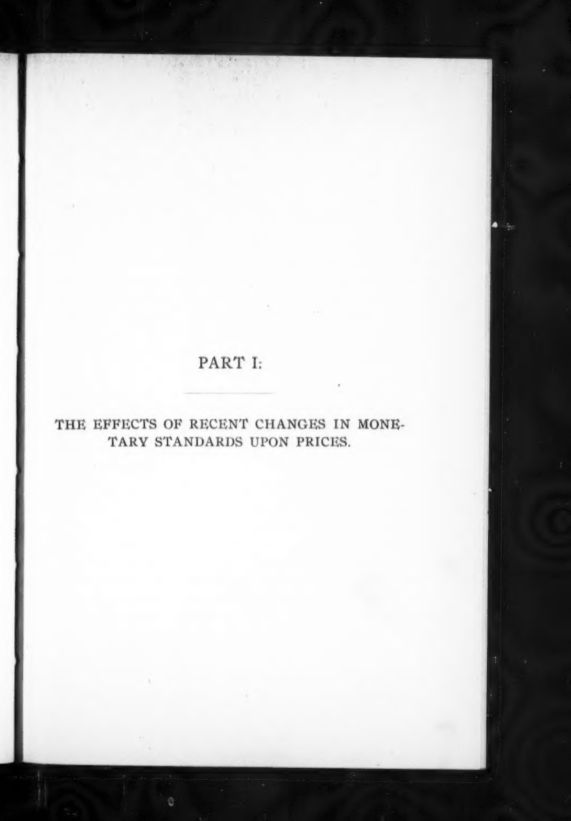

Kinder, 1899: quem ganhou e quem perdeu com a queda dos preços
Leitura: 11 min
Francis S. Kinder atribui a queda de preços depois de 1873 à adoção do padrão-ouro e mede quem ganhou e quem perdeu: credores, devedores, assalariados, arrendadores e empresários.


Um homem empresta 1.000 dólares por um ano, a 5% de juros. Se os preços sobem 10% no período, os 1.050 dólares que recebe de volta compram só o que 954,54 dólares compravam no dia do empréstimo: em vez de ganhar 5%, perdeu o equivalente a juros negativos de 4,5%. Se os preços caem 10%, os mesmos 1.050 dólares valem o que valiam 1.116,66, e o ganho real é de 16,6%. Com esse exemplo Francis S. Kinder abre a parte de seu estudo dedicada à distribuição da riqueza.
O estudo é o nº 6 do quarto volume dos Economic Studies, de dezembro de 1899, o último número do volume e da série. Tem duas partes. Na primeira, Kinder pergunta por que os preços subiram entre 1850 e 1873 e caíram de 1873 a 1895. Na segunda, examina como essa queda redistribuiu renda entre juros, aluguéis, salários e lucros.
A queda dos preços foi obra da abundância?
A explicação corrente atribuía a queda ao progresso na produção e nos transportes. David A. Wells concluíra que a influência de quaisquer outras causas fora desprezível, se não imperceptível, e J. Laurence Laughlin chamava de demagogia dizer aos plantadores de algodão que a cunhagem livre da prata restauraria o preço da fibra. Kinder objeta que produzir mais não derruba necessariamente os preços, porque o consumo cresce com a riqueza, e que fretes mais baratos podem ser efeito, e não causa, de preços em queda.
Seu teste é comparar os dois períodos. Se o progresso material explica a queda depois de 1873, o período anterior, de alta, deveria ter tido menos progresso. A produção mundial de trigo, pelos números que reúne, cresceu 62% nos vinte anos até 1870-80 e 23% nos vinte anos até 1893-97, enquanto o preço em Londres caiu de 54 xelins por quarter, na média de 1853-77, para 25,6 em 1893-97. O próprio autor acha improvável que o aumento do primeiro período tenha sido tão grande quanto a tabela indica, mas não encontra sinal de expansão maior no período de queda. No ferro, a produção por milhão de habitantes cresceu cerca de 50% na década de alta e 25% a 30% nas seguintes.
A conclusão da primeira parte é que os dois períodos não mostram contraste, nem na oferta de mercadorias nem nos transportes, capaz de explicar a alta num e a queda no outro. Kinder lembra que Augustus Sauerbeck, em 1886, chegara a resultado parecido com os dados do comércio britânico. E recusa o argumento de que o aumento dos salários reais provaria que o ouro não se valorizou: salários não são preços no sentido usual da palavra.
O que o ouro tem a ver com isso?
As descobertas da Califórnia e da Austrália levaram a produção anual de ouro de 13 milhões de dólares em 1831-40 a 130 milhões em 1851-60, alta de 900%, e aumentaram o estoque mundial em 80% em vinte anos. Mesmo assim os preços subiram só cerca de 30% entre 1850 e 1870. A razão, para Kinder, é o bimetalismo: Estados Unidos, França, Espanha, Itália, Bélgica e Suíça cunhavam os dois metais, e o ouro novo tomou nas casas da moeda o lugar da prata. Pelos números de Soetbeer, a cunhagem de ouro passou de 50 toneladas em 1831-40 para 1.633 em 1851-60.
Depois de 1870 o movimento se inverteu. A produção de prata cresceu, a de ouro caiu até 1883, e uma série de países adotou o padrão-ouro e foi ao mercado comprar reservas: Estados Unidos, Alemanha, Itália, Holanda e os escandinavos, numa demanda que Robert Giffen estimou em um bilhão de dólares; depois Áustria e Rússia, que absorveram mais de 400 milhões de dólares entre 1892 e 1897. Em 1895, a Grã-Bretanha mantinha em ouro seis sétimos da circulação monetária efetiva; a França, cerca de metade; a Alemanha, dois terços.
A tabela das razões entre os metais completa o argumento. Entre 1492 e 1850 extraíram-se 31,52 onças de prata para cada onça de ouro, e a razão de valor nunca passou de 16,25. Entre 1850 e 1873 a proporção extraída caiu para 5,89, e a razão de valor quase não mudou. Entre 1873 e 1893 a proporção foi de 17,63, perto da razão de cunhagem, e ainda assim a razão de valor chegou a 32,56. Não foi a produção, conclui Kinder, mas o uso dos metais que mudou. Com o bimetalismo mantido, os preços teriam ficado a meio caminho entre os preços em ouro e os preços em prata, provavelmente mais perto destes.
“A mudança dos padrões monetários foi a causa predominante da queda dos preços.” (the change of monetary standards was the one predominating cause of the fall of prices)
Quem ganha quando os preços caem?
Kinder resume as opiniões correntes. Cairnes achava que a alta de preços beneficia toda a classe industrial contra quem vive de riqueza acumulada; Jevons e Walker, que beneficia primeiro os empresários e depois todos, pelo estímulo à produção; Chevalier e muitos outros viam grande perda para assalariados. A visão mais comum era que devedores ganham com a alta e credores com a queda. O autor nota exceções: o devedor que paga com um salário fixo pode perder com a alta, e o credor continua credor e depende de como os juros se ajustam.
Os juros, argumenta, acompanham o movimento dos preços, sobem quando eles sobem e caem quando caem, mas não acompanham o nível. Por isso discorda de Irving Fisher, para quem preços altos e baixos se correlacionam com juros altos e baixos: a década de preços mais altos, 1865-74, teve juros moderadamente baixos. Com os cálculos de Fisher para Londres, mostra que quem emprestou em 1853-57 recebeu 5,3% nominais e 2,8% reais; em 1871-73, 3,7% nominais e juros reais negativos de 2,7%; em 1891-95, só 1,6% nominais, mas 5,5% reais.
Nas hipotecas agrícolas americanas, segundo o censo, os juros caíram de 7,62% em 1880 para 7,52% em 1889, enquanto a valorização do dinheiro, medida pelos preços de todas as mercadorias de 1875 a 1891, foi de 2% ao ano. O peso da dívida do agricultor subiu, portanto, cerca de 2% ao ano, e o credor ganhou o mesmo. Nos aluguéis, os dados apontam alta contínua, independente dos preços, que Kinder atribui à valorização dos imóveis com o crescimento da população; o custo anual de moradia do operário parisiense, pelo Office du Travail, passou de 120 francos em 1844-53 para 320 em 1884-93. Em geral, conclui, quem vive de aluguel perde com a alta e ganha com a queda, mas os efeitos são pequenos.
Os salários perdem quando os preços sobem?
Era a tese de Laughlin, de Henry W. Farnam e de R. Mayo-Smith: a alta de preços prejudica o assalariado, e a queda o beneficia. Kinder a testa contra os dados. Primeiro, o mecanismo: o ouro novo não aumenta de imediato o consumo de uns poucos mineiros; vai para novas empresas, eleva a demanda por trabalho e só então a demanda por mercadorias. A corrida de dezenas de milhares ao Alasca mostraria como a mineração atrai trabalhadores de longe e obriga os outros setores a pagar mais.
“Quando os preços sobem, os salários também sobem, mas mais devagar.” (When prices rise wages also rise, but more slowly)
A frase é de Mayo-Smith, que a chamava de uma das proposições menos discutíveis da economia política. Kinder responde com história e estatística. Na Inglaterra elisabetana, a degradação do trabalhador viria, segundo Thorold Rogers, da fixação legal de salários pelos juízes das Quarter Sessions, mantida até 1812, e não da alta dos preços. Os salários agrícolas ingleses de Caird passaram de 7 xelins e 3 pence por semana em 1770 para 14 xelins em 1878, com preços parecidos nos dois anos. Para o Reino Unido, A. L. Bowley encontrou alta do poder de compra de 34% entre 1860 e 1874 e de 43% entre 1874 e 1891, 2,1% ao ano em ambos os períodos.
Para 1850-1874, Kinder reúne doze conjuntos de cálculos, e todos mostram salários subindo mais que os preços, de 1,2% ao ano nas indústrias de carvão, ferro, vidro e cerâmica a 2,9% ao ano na agricultura de Massachusetts. Atribui a conclusão de Mayo-Smith aos anos da Guerra Civil, com papel-moeda inconversível, quando o medo da desvalorização faz os preços subirem antes dos salários. Ressalva que, quando os dois períodos mostram ganhos parecidos, nenhuma conclusão segura é possível; com essa reserva, a evidência favoreceria a alta de preços como mais vantajosa ao assalariado.
E o emprego?
A taxa de salário mede só quem tem emprego regular. Com dados de Charles B. Spahr sobre oitenta estabelecimentos do relatório da Comissão do Senado, Kinder compara número de empregados e folha total. Entre 1860 e 1873, com preços em alta de 18%, os empregados passaram de 5.651 para 6.153 e a folha cresceu 67%. Entre 1879 e 1883, com preços em alta de 10%, os empregados aumentaram 40%, a folha 58% e o salário médio 13%. Spahr observa que nas crises os menos eficientes são demitidos primeiro, o que sustenta o salário médio e esconde a perda.
E os lucros do empresário?
A visão de Walker era que o fabricante ganha porque compra insumos e trabalho antes da alta e vende depois. Kinder a rejeita, já que salários e matérias-primas tendem a subir antes dos produtos acabados. O ganho viria de outra fonte: a maioria dos empresários toma capital emprestado e ganha, na alta, o que o credor perde em juros reais; na queda, perde o que o credor ganha. Há ainda um ganho indireto. Se a alta aumenta em 50% o giro do estoque, um empresário que esperava 10% sobre o capital ganha mais 5% sem prejuízo de ninguém, e os trabalhadores ganham emprego mais estável.
“Este, creio, é o efeito mais gratificante da alta dos preços.” (This, I believe, to be the most gratifying effect of rising prices.)
É a última frase do estudo. Numa comunidade em que todos trabalham só metade do tempo, escreve Kinder, qualquer estímulo, mesmo ilusório, que os ponha a trabalhar o tempo todo pode beneficiar a todos sem prejudicar ninguém.
Na minha leitura
Na minha leitura, o mérito de método do estudo está na comparação entre dois períodos como teste de hipóteses rivais. Se a abundância de mercadorias explicasse a deflação, o período de inflação anterior deveria mostrar menos progresso; não mostra. É um raciocínio de contrafactual que dispensa medir tudo e exige só que a causa alegada esteja ausente onde o efeito também está.
Também é atual a insistência em olhar a folha total, e não só a taxa de salário. A perda dos trabalhadores numa deflação aparece no emprego, e o salário médio pode até subir porque os mais mal pagos saem primeiro. A distinção entre o movimento dos preços, que os juros acompanham, e o seu nível, que não acompanham, antecipa a diferença entre inflação esperada e inesperada.
Glossário
- Bimetalismo
- regime em que a moeda é cunhada livremente em ouro e prata a uma razão legal fixa entre os dois metais.
- Padrão-ouro
- regime em que a unidade monetária é definida por um peso fixo de ouro.
- Número-índice
- medida do nível de preços em relação a um período de base igual a 100.
- Juro real ou virtual
- juro corrigido pela variação do poder de compra do dinheiro durante o empréstimo.
- Valorização do dinheiro
- aumento do poder de compra da moeda, o mesmo que queda dos preços.
- Empresário (undertaker)
- quem organiza e dirige o negócio, assumindo seus riscos.
- Folha total
- soma dos salários pagos num período, que depende do salário médio e do número de empregados.
Fontes
- Part I. Chapter I. Prices as Affected by Progress in the Production and Distribution of Commodities, 1850-73 and 1873-95 (pp. 415–433). Internet Archive (número completo, PDF)
- Chapter II. Prices as Affected by Changes in the Production and Monetary Uses of the Precious Metals Since 1850 (pp. 434–440). Internet Archive (número completo, PDF)
- Part II. Chapter III. Current Views (pp. 443–445). Internet Archive (número completo, PDF)
- Chapter IV. Interest and Rent Charges (pp. 446–460). Internet Archive (número completo, PDF)
- Chapter V. Wages (pp. 461–494). Internet Archive (número completo, PDF)
- Chapter VI. Profits (pp. 495–499). Internet Archive (número completo, PDF)
- Número completo digitalizado (domínio público): Internet Archive.
Documento em domínio público (EUA, publicado antes de 1931), via JSTOR Early Journal Content e Internet Archive. Resumo e comentário do autor deste site, sem afiliação com a American Economic Association. Encontrou um erro? Escreva: a correção é publicada no próprio texto, com data.
← ES 24 · Hill, 1899: como a Inglaterra cobrava o imposto de renda